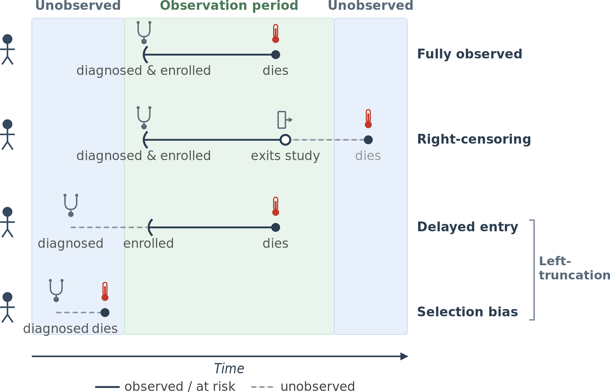

1 Introduction
This page is a work in progress and minor changes will be made over time.
Building on the motivation in the preface, this chapter introduces the concepts and terminology needed to specify a machine learning survival analysis problem:
- What distinguishes time-to-event data from data found in regression and classification;
- The prediction tasks unique to the survival setting; and
- The most common forms of censoring and truncation that appear in practice.
1.1 Survival analysis
This book uses the term survival analysis, which highlights the field’s roots in medical statistics and in particular analyzing survival times (the time until death). However, as already discussed in the preface, this is not the only application of the field and other terms may also be found; for example, reliability, duration, and failure-time analysis.
In Chapter 3, ‘survival analysis’ is refined to specifically refer to the case when the event of interest can occur exactly once, for example, predicting when a patient may die after diagnosis of Stage IV non-small cell lung cancer. In Chapter 4, ‘event history analysis’ is defined, which is a generalization of the single-event setting to the case when one or more events can occur one or more times, for example, predicting when a patient will have relapses of multiple sclerosis. To align with common practice, the term ‘survival analysis’ is used throughout the book and context will make clear when the more general event history methods apply.
One of the key aims in this book is to highlight the ubiquitous nature of survival analysis and to encourage more machine learning practitioners to use survival analysis when appropriate. Machine learning practitioners are likely familiar with classification and regression, but may not be familiar with survival analysis. The examples below demonstrate when survival analysis might be appropriate.
Survival probabilities
Returning to the example in the preface, say an elderly man receives the treatment investigated in the randomized trial for advanced non-small cell lung cancer (NSCLC). The oncologist might tell him (in some softer words) “based on the results of this trial, the three-year survival rate of NSCLC in 75-year old males on this treatment is 67.5%”. This initially appears as a probabilistic classification problem as the clinician is implicitly saying “if we look at who did or did not die from NSCLC (the outcome), given a sample of similar people (the features), then approximately 67.5% survived within three years”. However, the data needed to estimate such probabilities is obtained from a dataset with partial information. Many patients in the dataset will be lost to follow-up perhaps because they moved abroad, died of another (unrelated) cause, or simply stopped turning up for appointments – each of these is a right-censoring event. Treating an observation that was censored as a negative label (i.e., “the event did not occur”) in a classification models would introduce bias. Survival analysis models would allow unbiased estimation of the three-year survival probability by taking into account the information from all observations, including the censored ones.
Risk-score calculation
Another common survival problem is to rank observations rather than predicting an absolute probability. Consider the allocation of donor hearts to eligible candidates on a transplant waiting list, which requires estimating which candidate is most likely to die soonest without a transplant. Candidates could be ranked in a list of least to highest risk of death, or assigned to risk groups: for example, patients at low or high-risk of dying within one year. A naive approach would be to train a classification model on historical waiting-list data, labelling each patient as “died within one year” or “survived to one year”. But waiting-list records are full of censoring: some patients received a transplant before the one-year mark (their one-year mortality without transplant is then unobservable), some were lost to follow-up, and some were still on the list at the end of the study. A classifier restricted to patients with a fully observed one-year outcome discards the cases that most inform the ranking and yields biased rankings. A survival model uses the partial information in censored records and produces a risk ranking that is consistent with whether or not each individual’s outcome is observed.
Estimating duration
For a non-medical example, return to the study in the preface of how long unemployed workers take to find a full-time job. Say data is collected over one calendar year, at the end of that period many workers will still be unemployed, others may move to a different country, taken on a part-time job, permanently removed from the labor force, or dropped out of the study for other reasons. A regression model trained only on uncensored observations would be heavily biased as the longest unemployment spells, those ongoing at the study end, would be absent from the training data.
The unemployment setting has further structure that standard regression cannot accommodate. Workers may exhibit multiple unemployment spells (recurrent events) and the ways in which they exit unemployment may be mutually exclusive, someone cannot both find full-time work and be permanently removed from the workforce. Treating only one exit type as the event and lumping the others in with censoring would mis-specify the problem; a more appropriate analysis would treat this as a competing risks or multi-state setting (Chapter 4).
These examples also demonstrate the nuance of a survival analysis prediction (Chapter 5), which may cover the probability of an event at a certain time (survival probabilities), ranking observations within a sample (risk-scores) or estimating the time until an event takes place (duration).
1.2 Machine learning survival analysis
Machine learning is an interdisciplinary field primarily concerned with building models that learn structure from data, for example to predict outputs from inputs or to identify patterns within observed data (Hastie et al. 2001). Defining if a model should be called ‘machine learning’ is surprisingly difficult; there is no clear boundary separating statistical learning from what is now often labelled machine learning. This book defines machine learning in a pragmatic sense to denote models whose parameters or structure are learned from data by optimizing an explicit objective function and whose success is judged by empirical performance on unseen data. This definition tightly couples the concept of machine learning with the need for robust evaluation (Part II) and allows for a broad range of models (Part III) to be considered machine learning, including those that would commonly be considered statistical models.
This book focuses on the supervised learning setting, where the goal is to predict outcomes from labelled training data. Development of machine learning survival analysis models has converged on three primary tasks of interest (formally defined in Chapter 5), or survival problems, which are defined by the type of prediction the model makes. Generally, one is encountering a survival problem if training a model on data where censoring is present in order to predict one of:
- A survival distribution: The probability distribution over event times.
- A relative risk: The risk of an event taking place compared to other observations in the same sample.
- A survival time: The time at which the event will take place.
Each prediction type serves a different purpose and one may be required to develop multiple models for optimal estimation of each prediction type. As an example, an engineer is unlikely to care about the exact time at which a plane engine fails, but they might greatly value knowing when the probability of failure increases above 5%, which is a survival distribution prediction. Returning to the organ allocation example, clearly choices cannot be made on a full survival distribution for every candidate on the waiting list, but an allocation can be made if it is clear one candidate is at substantially greater risk of death in the near term than another, a relative risk prediction. As will be seen in Chapter 5, these tasks are mathematically related and can be transformed into one another.
When it comes to making distribution predictions, survival analysis stands out again. Common distribution defining functions, functions that uniquely define a probability distribution, are the probability density function (PDF) and cumulative distribution function (CDF). In survival settings, interpreting the PDF can be counter-intuitive as it is an unconditional quantity that does not account for whether the event has or has not already occurred. The CDF is the probability that the event has ‘already’ taken place at a given time, which is opposite to the usual survival prediction: whether the event ‘will’ take place. Therefore, survival analysis focuses instead on predicting the survival function, which is simply one minus the CDF, and the hazard function, which is the conditional rate of the event occurring at some time given that the observation has survived up to that time point.
These functions are formally defined in Chapter 3 and are visualized in Figure 1.1 using a Gompertz distribution, often used to model adult lifespans, fit to Swedish mortality data (Broström 2024). The survival function (bottom right) decreases from one to zero and gives the probability of surviving to a given age (equivalently, that death has not occurred by that age); the cumulative distribution function (bottom left) is its mirror image. The density (top left) peaks around age 88 this is the age at which unconditional deaths are most common. The hazard (top right) is a conditional rate and is not bounded above by one; on this fit it doubles roughly every seven years and is still climbing steeply at the oldest ages. Because the time axis is age in years, the hazard has units of per year. For example, the fitted hazard is about \(0.014\)/yr at age 70 (\(\approx 1.4\%\) chance of dying within the next year given survival to 70). To help exemplify the difference between the density and hazard, consider the probability of death at age 100. The density of events around the age 100 is lower than 70, simply because the sample size is materially lower as less people live to that age. In contrast, given that someone is alive at 100, their (instantaneous) risk of dying over the next year (hazard) is \(18\) times higher than at age 70.
![Four line graphs, each on an x-axis of age in years from 30 to about 110. The density f(t) rises slowly from near zero at age 30, peaks around age 88 at about 0.035, then falls to near zero by age 110. The hazard h(t) is close to zero through middle age and climbs exponentially to about 0.65 by age 110. The cumulative distribution F(t) is near zero at age 30 and rises in an S-shape to nearly one by age 110. The survival function S(t) is the mirror image, starting at one at age 30 and decreasing to near zero by age 110.](Figures/introduction/gompertz.png)
1.3 Censoring and Truncation
As already discussed, censoring is a defining feature of survival analysis. In addition to censoring, survival data can include truncation, which means portions of follow-up time are excluded. The precise definitions of different types of censoring and truncation are provided in Chapter 3, non-technical summaries of the most common forms of censoring and truncation are provided below.
The most common form of censoring is right-censoring (Figure 1.2, second row), this occurs when the true survival time is greater than (‘to the right of,’ if you imagine a number line) the observed censoring time. The examples in Section 1.1 are all exhibiting forms of right-censoring. Left-censoring is recorded when the event of interest is less than (‘to the left of’) the observed censoring time. Chapter 3 provides an example of someone telling an interviewer that they started using a phone (the event of interest) before the interview, but they do not remember when. If the time-to-event outcome is “age at first phone use” then a 23-year-old who is using a phone but cannot remember when they started, is left-censored at \(23\) . Often, the censoring event is assumed to be independent of the event of interest (e.g. random drop-out). However, in other cases the event may preclude the observation of the event of interest and is therefore a competing risk (Chapter 4). For example, if an unemployed worker is still looking for a job when the study window closes, the censoring is independent of if/when they would eventually find work. In contrast, finding a part-time job is a competing event as it precludes the primary event (finding full-time employment) and may depend on the same factors (skills, availability, local labour market) that drive the full-time outcome.
Left-truncation is the more common form of truncation and involves data before the truncation time being excluded. Left-censoring occurs because the event of interest has already happened but not known when. Left-truncation happens when subjects experience the event before meeting the inclusion criteria and thus never entered the study at all. That truncation times affect enrollment into a study (sampling bias) whereas censoring affects outcome observation.
As a concrete example, consider a study on time until death in patients diagnosed with tuberculosis (TB), where enrolment is open to anyone with a TB diagnosis, including patients diagnosed before the study opened. Left-truncation arises if patients die between their diagnosis and the study start, they are never observed and are absent from the data (Figure 1.2, fourth row). Those who do survive to the study start will enter with a known gap between diagnosis and enrolment but their outcome time is only calculated from the time at which they enter the study (Figure 1.2, third row). Late entry of observed patients and the invisible absence of those who died too early, are both consequences of the same left-truncation structure and can be handled by the same remedy: adjusting the risk set so that patient \(i\) only contributes from their enrolment time onward, not from time zero. Ignoring this and treating enrolment as the time origin compresses apparent survival times and biases the sample; a patient diagnosed two years before study start but dying one year into the study has a true survival of three years, not one. Left-truncation also underlies related phenomena: selection bias when the pre-entry period is unobservable, for example, miscarriages that occur before pregnancy awareness; and immortal time bias where group membership is determined only after a period of guaranteed survival, for example, if study entry depends on receiving a medical treatment that can only be given three years after diagnosis (Figure 1.2, fifth row). Methods for handling left-truncation, and the detailed treatment of selection and immortal-time biases, are developed in Chapter 3.
The first part of this book will formally introduce and develop these concepts further.
